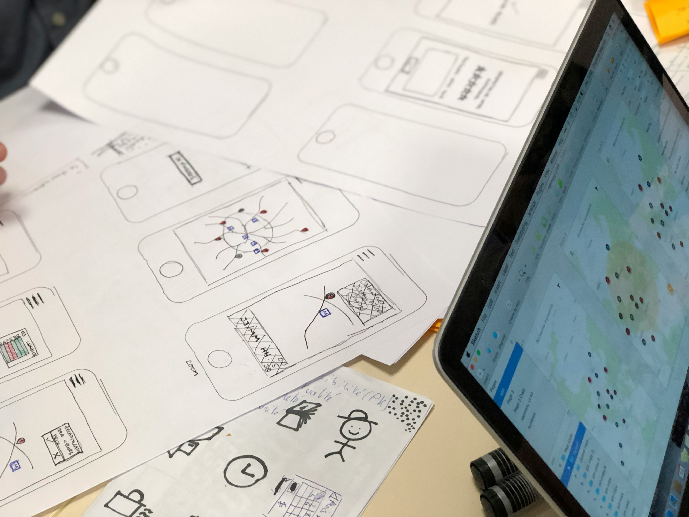

Desain yang Bukan Hanya Soal Tampilan
Pada awal saya belajar UI/UX, fokus utama saya hanyalah tampilan — warna, tipografi, layout, dan animasi. Namun seiring waktu, saya menyadari bahwa desain bukan sekadar estetika, melainkan tentang “rasa”. Bagaimana pengguna merasakan kenyamanan, kemudahan, dan kejelasan saat berinteraksi dengan sistem yang kita buat.

Ketika bekerja pada proyek seperti Ecolota, saya belajar bahwa setiap elemen desain harus memiliki tujuan emosional. Tombol bukan hanya untuk diklik, tapi harus membuat pengguna merasa yakin. Warna bukan sekadar keindahan, tapi membawa pesan psikologis — hijau untuk harapan, biru untuk kepercayaan, abu-abu untuk netralitas.
Mendesain dengan Empati
UI/UX sejatinya adalah tentang empati. Kita bukan mendesain untuk diri sendiri, tetapi untuk pengguna dengan berbagai latar belakang dan kebiasaan. Dalam setiap wireframe yang saya buat, saya berusaha memikirkan bagaimana alur kerja bisa sesederhana mungkin, tanpa kehilangan nilai fungsionalitas.

Salah satu prinsip yang saya pegang adalah: *“Setiap klik harus berarti.”* Itu artinya, setiap interaksi dalam aplikasi harus memberikan respon yang bermakna, entah berupa animasi halus, notifikasi lembut, atau perubahan warna yang menandakan tindakan berhasil. Hal-hal kecil ini membentuk “rasa” yang membuat pengguna betah.
Rasa itu Diciptakan, Bukan Ditemukan
Menemukan rasa dalam desain bukan perkara instan. Butuh banyak observasi, pengujian, dan keberanian untuk mengubah hal yang sudah kita anggap “bagus”. Desain yang baik tidak pernah selesai — ia terus berkembang bersama pengalaman pengguna.

Saya percaya bahwa desain yang punya rasa adalah desain yang jujur. Ia tidak berusaha menjadi mewah, tapi menjadi manusiawi. Dan itu adalah inti dari perjalanan saya sebagai desainer — belajar menemukan rasa dalam setiap piksel yang saya letakkan.